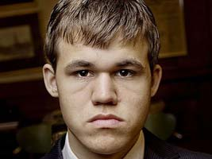
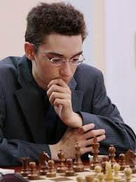
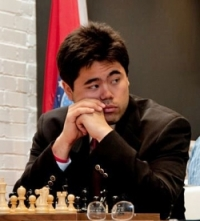
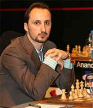

-
Карлсен, Магнус
род. 30 ноября 1990 года, Тёнсберг, губерния Вестфолл, Норвегия) — норвежский шахматист, 16-й чемпион мира по шахматам (2013). Первый в истории шахмат абсолютный чемпион мира (в трёх категориях) — с 2013 года чемпион мира по классическим шахматам, с 2014 года чемпион мира по рапиду и блицу[1]. Один из самых молодых гроссмейстеров мира — стал гроссмейстером 26 апреля 2004 года в возрасте 13 лет 4 месяцев 27 дней, третий в списке самых молодых гроссмейстеров мира после Сергея Карякина и Паримарьяна Неги[2]. Самый молодой шахматист, преодолевший планку в 2700[3] и 2800[4] пунктов рейтинга Эло, самый молодой шахматист, возглавивший официальный рейтинг ФИДЕ в возрасте 19 лет и 1 месяца
-
Каруана, Фабиано
30 июля 1992, Майами, Флорида, США) — итальянский шахматист американского происхождения, гроссмейстер (2007). Родился 30 июля 1992 года в Майами, в четырёхлетнем возрасте переехал с родителями — Лу и Сантиной Каруана — в Бруклин. В шахматы Каруано научился играть в пять лет, а спустя полгода сыграл в первом турнире. В ноябре 2004 года, когда ему было 12 лет, семья переехала в Мадрид, где он начал тренироваться у Бориса Злотника. В 12 лет он стал мастером Международной шахматной федерации (ФИДЕ). В 2007 году семья вновь переехала — на этот раз в Будапешт, где он занимался с Александром Черниным. Ему помогали такие известные гроссмейстеры, как Александр Белявский и Юрий Разуваев. В последние два года его тренером является Владимир Чучелов[1].
-
Накамура, Хикару
американский шахматист, гроссмейстер (2003), один из ведущих шахматистов США и мира. Родители Накамуры, отец-японец и мать-американка, переехали с сыном в США через два года после его рождения. Хикару начал играть в шахматы в 7 лет под руководством своего отчима — известного в США шахматного тренера Сунила Веерамантри. Через три года, в возрасте 10 лет и 79 дней, Накамура стал самым молодым в истории мастером Американской Шахматной Федерации, а в возрасте 15 лет и 79 дней получил звание международного гроссмейстера ФИДЕ[1], побив рекорд для американских шахматистов, установленный ранее Робертом Фишером. В последние годы Хикару Накамура успешно выступает во многих международных турнирах. В 2009 году стал чемпионом мира по шахматам Фишера, выиграл международный турнир в Сан-Себастьяне. В 2010 году в составе сборной США стал вице-чемпионом мира. У Накамуры атакующий, комбинационный стиль игры. Также Накамура является очень сильным игроком в блиц-шахматы, он достигал самых высоких рейтингов в мире на ICC.
-
Топалов, Веселин
болгарский шахматист, гроссмейстер (1992), чемпион мира по шахматам по версии ФИДЕ (2005). Веселин Топалов научился играть в шахматы в 8-летнем возрасте и быстро добился прогресса в игре. В 1989 году в Пуэрто-Рико он выиграл звание чемпиона мира среди юношей до 14 лет. В 1990 году в Сингапуре Топалов завоевал второе место на чемпионате мира среди юношей до 16 лет. В 1992 году Топалов стал гроссмейстером. С середины 1990-х годов Топалов входит в группу сильнейших гроссмейстеров мира. Во время партии Топалов всегда заряжен на борьбу, его игра всегда бескомпромиссна, он не делает коротких ничьих, он всегда играет на победу, даже чёрными.
-
Грищук, Александр

Алекса́ндр И́горевич Грищу́к (род. 31 октября 1983, Москва) — российский шахматист, гроссмейстер (1999). Двукратный победитель Всемирных Шахматных Олимпиад в составе команды России (2000, 2002) и трёхкратный золотой призёр командного чемпионата мира в составе команды России (в 2005, 2010 и 2013 г.г.). Чемпион России (2009). Чемпион мира по блицу (2006, 2012). Заслуженный мастер спорта России (2013)[1]